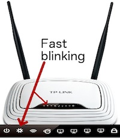

OpenWRT + OpenVPN
I bought a cheap router for the explicit sake of installing OpenWRT and playing with it (which originated in the unfulfilled wish to setup a SSH tunnel on my existing Netgear router with the existing official firmware).
The victim is a TPLink WR841N, which for 20 euros seems much more valuable than my existing Netgear WNDR3700; (in fact, after the initial zero-steps setup I was doubtful about the firmware upgrade to OpenWRT, as it seemed a really solid router).
The OpenWRT documentation for this device is not bad: the most important point is to detect the hardware version of the device (8.2 in my case), and find the associated information -which at the moment does not exist-. But by checking the documentation on other existing versions, is easy to follow some hints and download and install the correct version.
My main objective is very simple: I have hosts on several locations, where I run OpenVPN, and I would like to automatically being able to appear as having an IP address on those hosts. That is, by connecting to specific ports on my router, all my network traffic will appear as originating in one of those hosts.
To better understand OpenVPN and why I required to setup a bridge vs a point to point tunnel, I recommend reading this short tutorial.
These entries show:
- OpenWRT installation: compiling own image and firmware update.
- Virtual interfaces setup: partitioning the network into several virtual, isolated, networks.
- OpenVPN bridge setup: how to setup OpenVPN using bridge mode.
Failsafe procedure
While setting up the virtual interfaces or the bridge, a misconfiguration can 'brick' the router. That is, the router boots, but there is no way to access it.
This documentation explains the failsafe procedure built in OpenWrt: it will attempt to bypass almost all configuration in favor of a few hard coded defaults, resulting in a router that boots up as 192.168.1.1/24 with only essential services running. From this state you can telnet in and fix certain problems.
For the TL-841N, the procedure implies to power off the router, then power it on again, pressing repeatedly the reset button on the back router. If the firmware detects the reset, the second led from the left on the front of the router will start blinking very fast (as opposed to the normal blinking speed that happens on normal boot). In that moment, it is possible to telnet again the router and correct any problems, mounting first the file system in read-write mode:
mount_root
Afterwards, it is sufficient to power cycle the router or just enter:
reboot -f